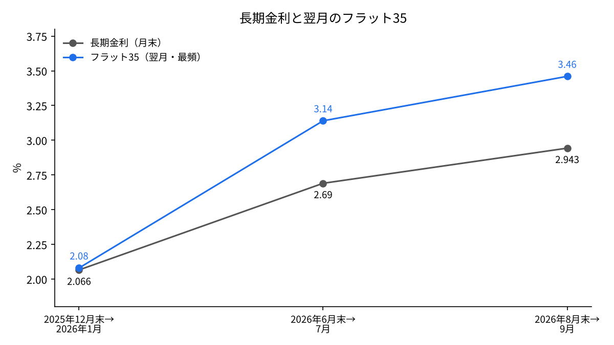
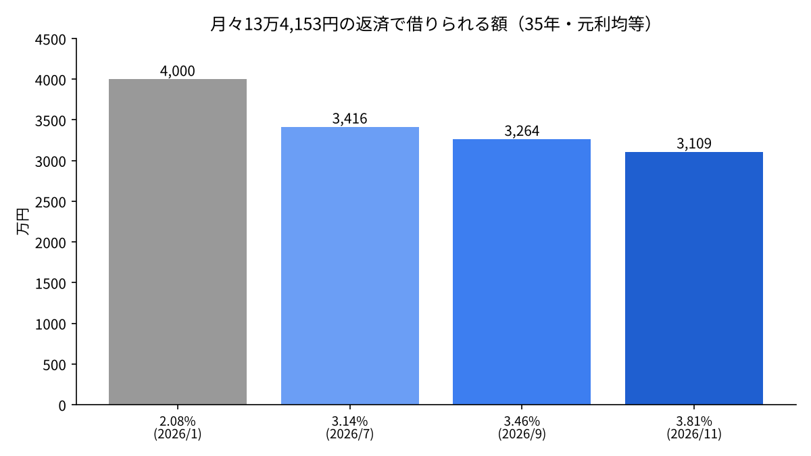

長期金利2.855%は、フラット35と東京の不動産価格に何か月で届くか――財務省・住宅金融支援機構・国交省のデータで検証
日本の長期金利（10年物国債の利回り）は、11月13日に2.855%まで上がった。1年あまり前の1%台から、2倍近い水準である。
住宅を買う人にとって、この数字はそのままでは届かない。届くのは住宅ローンの金利と、物件の値段を通してである。
本稿の問いは、長期金利の上昇が、何か月の遅れで全期間固定の住宅ローン（フラット35）と東京の中古マンションの価格に表れるのか、である。
- 長期金利はほぼ1か月の遅れでフラット35に届く。2025年12月末から2026年8月末に長期金利は0.88ポイント上がり、翌月のフラット35は1.38ポイント上がった。
- 東京23区の中古マンション価格は、長期金利が2.33%まで上がった2026年1月から約5か月後の6月に上昇が止まり、8月まで3か月続けて下がった。
- 同じ月々の返済額で借りられる額は、フラット35が2.08%から3.81%に上がると約22%減る。価格の上昇が止まったのは、この減り方で説明できる範囲にある。

問いと背景
長期金利とは、満期まで10年ある国債の利回りのことで、本稿では財務省が毎日公表する10年物国債の金利を使う[1]。住宅ローンの固定金利は、この長期金利を土台に決まると広く説明されている[3]。
フラット35は、住宅金融支援機構が民間の金融機関と組んで出す、最長35年の全期間固定の住宅ローンである。金利は毎月決まり、2026年11月に資金を受け取る分は、返済期間21〜35年・融資率9割以下で年3.810%だった[2]。
用語を2つ定める。最頻金利とは、取り扱う金融機関の中で最も多く使われている金利のことである。融資率とは、物件の価格に対して借りる額の割合で、9割以下なら頭金を1割以上入れる形になる。
一方、不動産の価格はローンの金利だけでは決まらない。建築費や人手、売り手の事情も効く。本稿では、金利の変化が価格に届くまでの時間に絞って見る。
データと方法
使うのは次の4つの系列である。(1)財務省の10年物国債の利回り[1]、(2)住宅金融支援機構のフラット35の最頻金利[2][3]、(3)国土交通省の既存住宅販売量指数[4][5]、(4)東京カンテイが公表する東京23区の中古マンション価格（70㎡換算）[6][7]。
長期金利とフラット35は、月末の長期金利と翌月のフラット35を1組にして並べ、上がった幅を比べる。フラット35の金利は、前の月の市場金利を見て決まる形になっているためである。
価格は、上昇が止まった月を特定し、長期金利が節目を超えた月との間の月数を数える。最後に、元利均等・35年・4,000万円の借入で、金利ごとの月々の返済額と、同じ返済額で借りられる額を計算する。
結果
| 月末の長期金利 | 翌月のフラット35（最頻） | 差（ポイント） |
|---|---|---|
| 2025年12月末 2.066% | 2026年1月 2.080% | 0.01 |
| 2026年6月末 2.69% | 2026年7月 3.140% | 0.45 |
| 2026年8月末 2.943% | 2026年9月 3.460% | 0.52 |

2025年12月末から2026年8月末までに、長期金利は2.066%から2.943%へ0.877ポイント上がった。同じ期間の翌月同士で比べると、フラット35は2.080%から3.460%へ1.38ポイント上がった[3]。長期金利の上げ幅より、ローン金利の上げ幅のほうが大きかった。1年前の2025年6月末と比べると、長期金利は1.228ポイント上がっている[3]。
差が0.01ポイントから0.52ポイントへ広がったことが、その理由である。長期金利が上がる局面で、貸す側が上乗せを厚くしたと読める。フラット35は2026年11月に3.810%まで上がっている[2]。
価格の側では、まず上昇が続いていた時期を確かめておく。2026年4月の東京23区の中古マンション価格は1億2,724万円で、前の月より2.4%上がり、24か月続けての上昇だった[11]。
その東京23区の中古マンション価格が2026年5月まで25か月続けて最高値を更新した後、6月と7月に下がった[6]。7月は1億2,724万円で、前の年の同じ月より21.4%高い水準を保ちながら、前の月比では0.1%下がった[6]。8月も0.4%下がって1億2,677万円となり、3か月続けての下落になった[7]。同じ8月、東京都全体でも0.2%下がって1億1,274万円となり、28か月ぶりのマイナスだった。周辺の3県はいずれも上がっており、下げは都心から始まっている[7]。
長期金利は2026年1月20日に2.33%まで上がった[3]。そこから価格の上昇が止まった6月までは約5か月だった。
一方で、取引の量は落ちていない。既存住宅販売量指数（季節調整値）は、2025年9月が129.8、2026年7月が132.4で、ほぼ横ばいだった[4][5]。値段の上昇は止まったが、売買そのものは続いている。
新築の側では、首都圏の2026年度上半期の平均価格が1億1,494万円で前の年より21.1%上がった一方、発売戸数は6.0%減の8,601戸だった[9]。高い価格に買い手が追いついていないと報じられている。
感度分析
| フラット35の金利 | 月々の返済（4,000万円・35年） | 2.08%のときの返済額で借りられる額 |
|---|---|---|
| 2.08%（2026年1月） | 13万4,153円 | 4,000万円（基準） |
| 3.14%（2026年7月） | 15万7,082円 | 3,416万円（−14.6%） |
| 3.46%（2026年9月） | 16万4,391円 | 3,264万円（−18.4%） |
| 3.81%（2026年11月） | 17万2,580円 | 3,109万円（−22.3%） |

同じ4,000万円を借りると、月々の返済は2.08%のときの13万4,153円から、3.81%では17万2,580円になり、3万8,427円増える。逆に月々の返済額を13万4,153円に保つなら、借りられる額は3,109万円まで減る。7月の3.14%でも14.6%、9月の3.46%でも18.4%の減り方で、金利が上がるたびに天井が下がってきた。
借りられる額が2割減れば、同じ収入の人が出せる価格も2割近く下がる。たとえば年収に対して返済額の割合を一定に保つ買い手なら、金利が1.7ポイント上がるだけで、予算は4,000万円から3,100万円台に縮む。価格の上昇が止まり、高い物件が売れ残り始めたのは、この減り方と矛盾しない。
今の長期金利2.855%に、7月と9月の差（0.45〜0.52ポイント）を足すと、12月のフラット35は3.31〜3.38%になる計算である。そうなれば、借りられる額の減り方は16.6〜17.5%まで戻る。
考察
反対の見方もある。価格の上昇が止まったのは金利のせいではなく、建築費の高騰で新築が高くなりすぎ、買い手が追いつかなくなったためだという見方である[9]。新築の発売戸数が減っていることは、この見方を支える。また、23区の中古マンションは2年以上上がり続けていたため、金利とは関係なく、上がりすぎた後の一服とみることもできる。金利の上昇と価格の頭打ちが同じ時期に起きたことは、それだけでは因果を示さない。
実際には、住宅ローンを借りる人の多くは変動金利を選んでいる。変動金利は日本銀行の政策金利に連動するため、長期金利の上昇はまず、固定金利で借りる人と、固定と変動を比べる人の判断に効く。
また、データには限界がある。比べた月の組は3つしかなく、統計的に遅れの月数を決めるには足りない。フラット35は2024年2月に子育て世帯向けの引き下げを広げるなど商品が変わっており、最頻金利を年をまたいで単純に比べることにも限界がある[10]。中古マンションの価格は70㎡に換算した平均で、売れた物件の築年数や場所の違いでも動く。
答え合わせの基準は2つある。12月以降、長期金利が2.8%台にとどまったまま23区の中古価格の下落が続くか。そして販売量指数が下がり始めるか。量が落ちれば、金利が価格だけでなく取引そのものを冷やし始めたことになる。
結論
長期金利は、ほぼ1か月の遅れでフラット35に届き、上乗せが厚くなる局面では上げ幅以上に届く。東京23区の中古マンションの価格には、長期金利が2.33%まで上がってから約5か月で、上昇の止まりという形で表れた。ただし取引の量はまだ落ちていない。下げは都心から始まり、周辺の県ではまだ上がっている。金利が価格に届く道は、まず借りる額の天井を下げ、高い物件から売れにくくする形で現れていると考えられる。
僕はこう見ている
僕は不動産の事業をしてきた。固定金利で借りていた頃に怖かったのは、金利の上昇そのものより、金利が上がって不動産の価格が下がることだった。今回のデータは、その順番どおりに動いているように見える。
金利が上がると、借金で買った人の売りが先に中古マンションやタワーマンションに出て、その後に大きなビルや商業ビルが出ると僕は見ている。どちらのマンションも買う考えはなく、僕の番はまだ来ていない。手元の資金は、金利のある世界で利益が伸びる銀行株に置いている。
出典
- 財務省「国債金利情報」 https://www.mof.go.jp/jgbs/reference/interest_rate/index.htm
- 住宅金融支援機構「【フラット35】借入金利の推移（2026年11月資金受取分）」 https://www.simulation.jhf.go.jp/flat35/kinri/index.php/rates/top/
- リクルート「【フラット35】金利推移と最新動向」（2026年7月・9月更新） https://finance.recruit.co.jp/article/?p=15561
- 国土交通省「既存住宅販売量指数 令和7年12月分」（2026年3月31日） https://www.mlit.go.jp/report/press/content/001991550.pdf
- 国土交通省「既存住宅販売量指数 令和8年7月分」（2026年10月30日） https://www.mlit.go.jp/report/press/content/002028246.pdf
- 共同通信「23区中古マンション価格横ばい 7月、売れ残りで上昇一服」（東京カンテイの発表・2026年8月24日） https://kumanichi.com/articles/2028237
- 東京カンテイ「70㎡換算価格推移 2026年8月」の転載 https://www.mec-h.com/news/43
- 共同通信「日本の長期金利が2.855%へ上昇」（2026年11月13日） https://www.oanda.jp/lab-education/market_news/kn_2026111301001138/
- 共同通信「新築マンション、1億1千万円超 首都圏4〜9月、21%上昇」（不動産経済研究所の発表・2026年10月20日） https://kumanichi.com/articles/2048561
- ダイヤモンド不動産研究所「11月のフラット35金利は引き下げでも3.5%台か」（2026年10月22日） https://diamond-fudosan.jp/articles/-/1113355
- 東京カンテイ「70㎡換算価格推移 2026年4月」の転載 https://www.mec-h.com/news/38
写真：Unsplash。図はYUKI CAPITALが作成
日々の数字と判断は、Xで記録している。